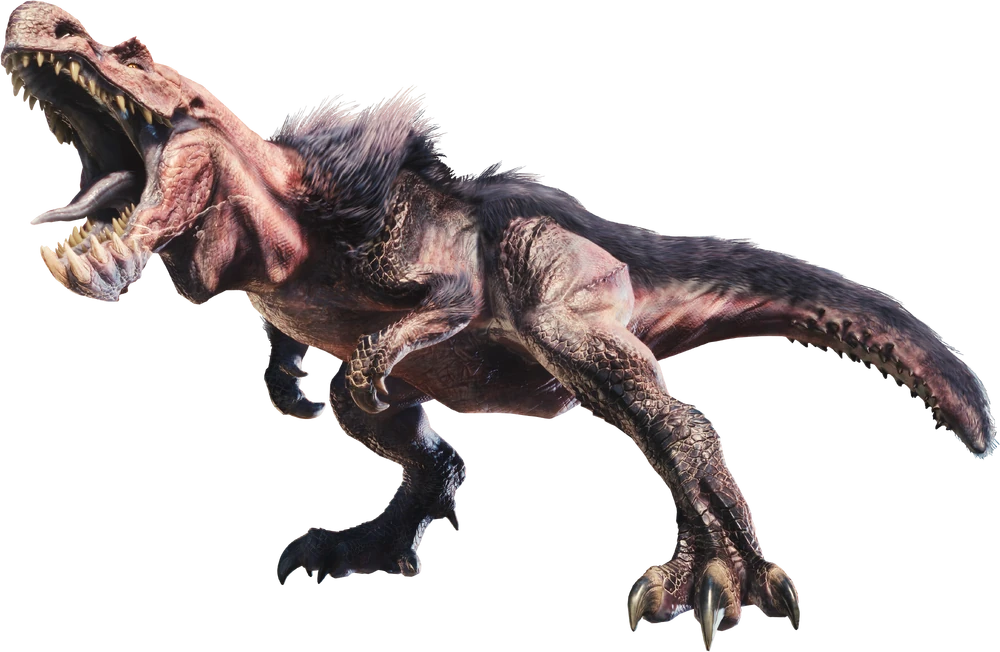
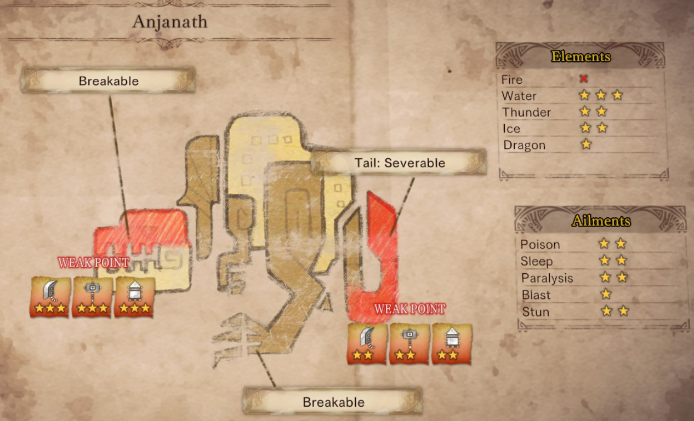

What Anjanath’s moveset lacks in speed and complexity, it makes up for in sheer brute force. Its attacks do massive damage and have high stun values. Of particular note are its flame attacks, the strongest of which is capable of knocking out players in one hit. For these reasons, Anjanath, especially its higher difficulty incarnations, often constitutes the first major “wall” players face when trying to progress through the game. However, defeating Anjanath only requires patience and planning. Once you have gotten past this fight, you can consider yourself a better player.

Tips
- When Anjanath’s throat glows and its fins flare out, it has entered its enraged state. This is when it is most dangerous. It may be prudent to play defensively and simply focus on dodging its attacks until it returns to normal. Alernatively, if you’re feeling brave, you can cling to its back and side. Stay away from its mouth and the area at its front.
- Breaking Anjanath’s nose will prevent it from using its fire attacks as effectively. With how dangerous those are, doing this can provide a massive advantage for the player.
- Attacking Anjanath’s legs enough can cause it to topple over. This provides an opening to chip away at its head/nose or tail. While it is upright, Anjanath’s legs are quite safe and easy to attack compared to its head/nose or other areas.
- Due to the directionality of its attacks, some players report more success when sticking to Anjanath’s right side/leg as opposed to its left. Staying between its legs is a similarly valid strategy.
Bodily Attributes, Immunities, and Weaknesses

( X = immune | ☆ = weak | ☆☆ = very weak | ☆☆☆ = extremely weak )
Drop Charts
( Not included: Plunderblade and Investigation rewards )
| Carves and Hunt Rewards | Rewards for Part Breaks | |
|---|---|---|
| Low Rank |
Anjanath Tail | Tail 70% Anjanath Plate | Body 5%, Tail 5% Anjanath Scale | Body 35%, Tail 25% Anjanath Fang | Body 25% Anjanath Pelt | Body 25% Anjanath Nosebone | Body 20% |
Anjanath Scale | Leg 100% Anjanath Fang | Head 62% Anjanath Nosebone | Head 35% Anjanath Plate | Head 3% |
| High Rank |
Anjanath Tail | Tail 70% Anjanath Plate | Body 5%, Tail 7% Anjanath Scale+ | Body 34%, Tail 20% Anjanath Pelt+ | Body 24% Anjanath Nosebone+ | Body 20% Anjanath Gem | Body 2%, Tail 3% Anjanath Fang+ | Body 15% |
Anjanath Scale+ | Hindlegs 100% Anjanath Fang+ | Head 62% Anjanath Nosebone+ | Head 35% Anjanath Gem | Head 3% |
| Master Rank |
Anjanath Lash | Tail 70% Anjanath Gem | Body 5%, Tail 7% Anjanath Shard | Body 34%, Tail 20% Anjanath Fur | Body 24% Heavy Anjanath Nosebone | Body 20% Anjanath Mantle | Body 2%, Tail 3% Anjanath Hardfang | Body 15% |
Anjanath Shard | Leg 100% Anjanath Hardfang | Head 62% Heavy Anjanath Nosebone | Head 35% Anjanath Mantle | Head 3% |
| Quest Clear Rewards | Shiny Drops | |
|---|---|---|
| Low Rank |
Anjanath Tail | 9% Anjanath Plate | 3% Anjanath Pelt | 27% Anjanath Scale | 21% Flame Sac | 18% Anjanath Nosebone | 12% Monster Bone L | 10% |
Anjanath Scale | 50% Anjanath Fang | 28% Wyvern Tear | 22% |
| High Rank |
Anjanath Tail | 9% Anjanath Plate | 3% Anjanath Pelt+ | 27% Anjanath Scale+ | 21% Inferno Sac | 18% Anjanath Nosebone+ | 12% Monster Keenbone | 10% |
Anjanath Scale+ | 50% Anjanath Fang+ | 28% Wyvern Tear | 22% |
| Master Rank |
Anjanath Gem | 3% Anjanath Fur | 29% Anjanath Shard | 23% Conflagrant Sac | 21% Heavy Anjanath Nosebone | 14% Anjanath Lash | 10% |
Anjanath Mantle | Leg 100% Anjanath Hardfang | Head 62% Heavy Anjanath Nosebone | Head 35% Anjanath Shard | Head 3% |